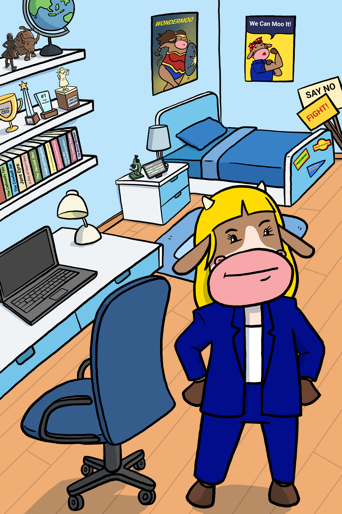

What the Herd Learned This Week: The Blue Twin (Bi) Report
Three key takeaways from Blue Twin (Bi) on Regulation, Compliance & Rights, plus what’s grazing next.

Blue Twin brought a binder and a tape measure to inspect the pasture fence.
What the Herd Learned This Week
- **Regulation Protects Users:** Sensible guardrails distinguish legitimate financial tools from predatory schemes.
- **Segregated Reserves:** Exchanges must hold customer assets 1:1, preventing rehypothecation and insolvency.
- **Zero-Knowledge Compliance:** New cryptography allows identity verification without exposing personal financial privacy.
Grazing Next Week
Mom (Au) returns to the pasture to show how to anchor family finances during unexpected market storms.
The pasture is open. Learn crypto without the headache.
Herd up free.